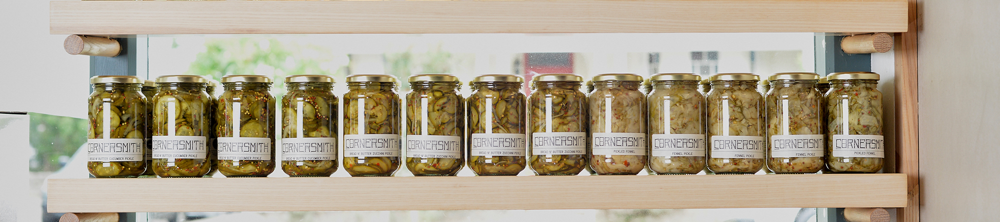
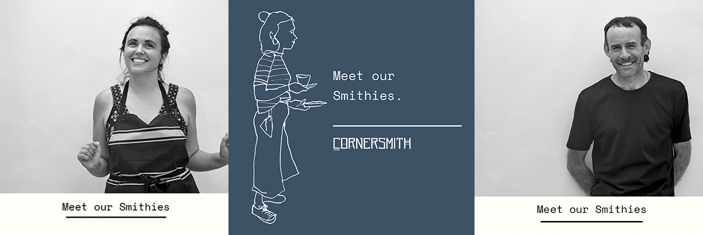
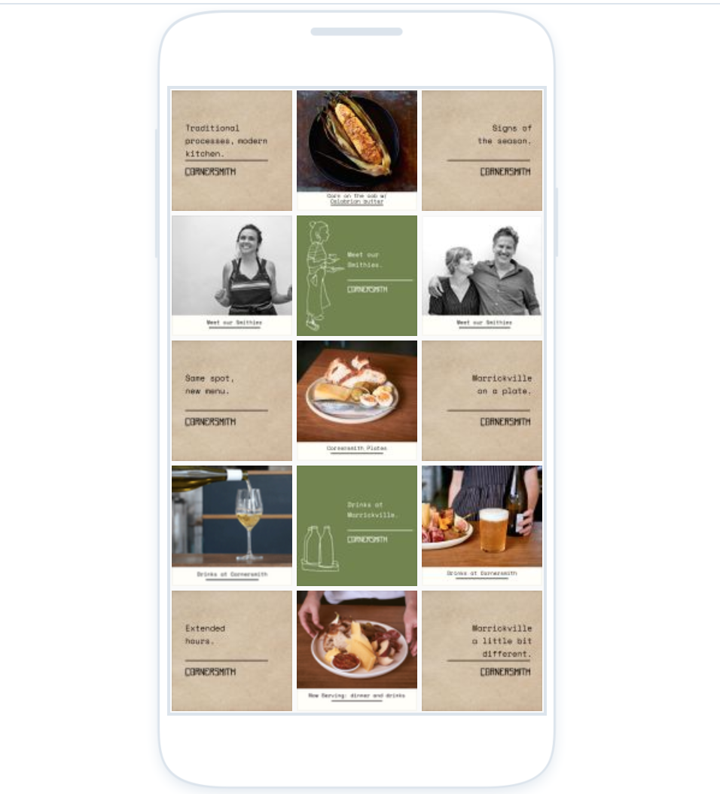
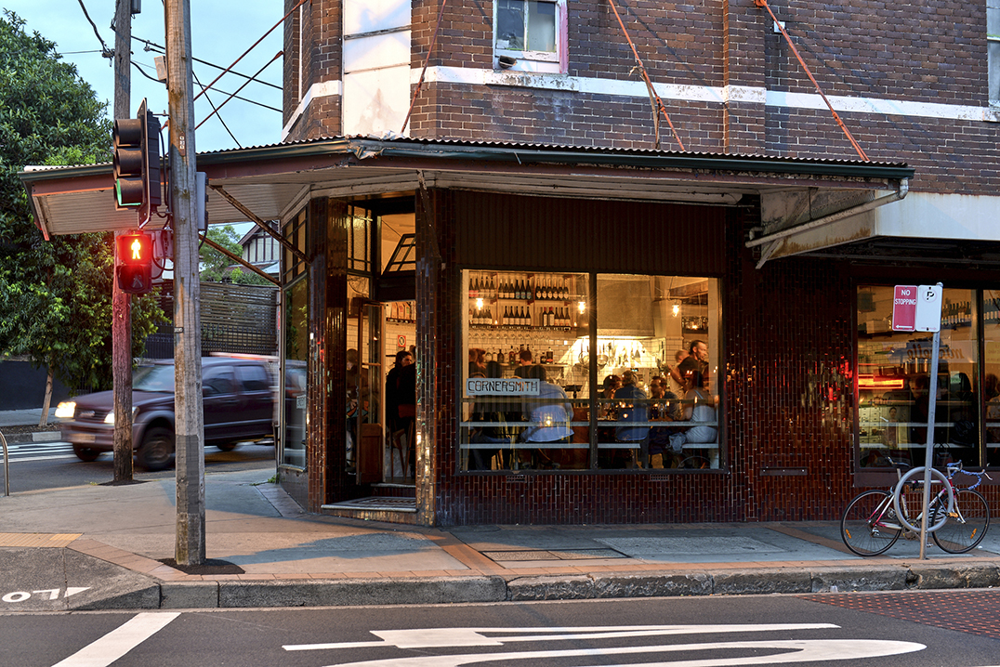
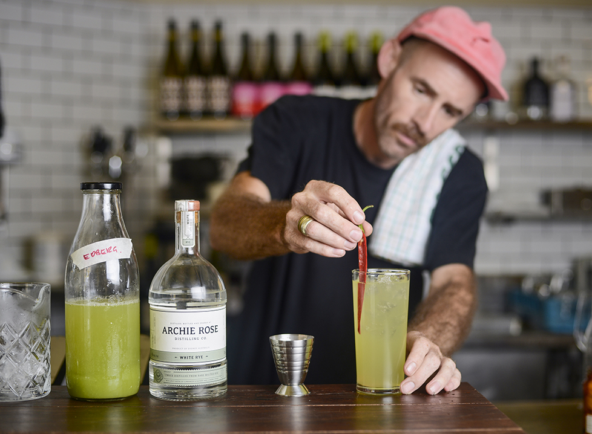

Projects - The Boweress
'Now Serving'
1 March, 2018
Cornersmith:
Cornersmith is a family run business with two cafes, a picklery, a cooking school and 2 cookbooks. They support and stand for ethical food production, sustainable business practices and community engagement. Their menu is seasonal and highlights makers, producers and growers who align with them.
Cornersmith has accumulated a loyal mass following of like-minded ‘smithies’ who are practicing what they preach inside and outside of the cafes. They stay true to traditional techniques and place them in a modern context. Cornersmith has a thriving trading program where people bring in their own home grown produce in which they are compensated with pickles of their choice. These items are either pickled or added to the menu, either way they are put to use.
The successful cooking school runs out of the picklery located in Marrickville. Here you can purchase all things pickles, equipment and educate yourself on the cornersmith way of living via one of their consistently sold out workshops. Workshops include The Waste Free Kitchen, Preserving For The Season, Smoking and BBQ, fermenting vegetables, just to name a few.

Project Elements
Campaign delivery for Cornersmith Marrickville relaunch including Press Release and Media Toolkit
Content strategy and design for social media including Instagram, Stories and Facebook
Video including gifs and cinemagraphs
Photography
Website content
EDM creation & distribution management

Content Forms and Channels:
A content driven marketing campaign was created and established across multiple social media platforms.

Results:
Reaffirming the innovative and unique offering with the new nightime twist at their Marrickville location was the basis for the strategy, content direction and production. How could we make what was already great, better? The desired outcome was achieved by identifying what the community valued both online and in – store. By understanding our audience we were able to achieve higher community engagement and interaction which in turn created click throughs to revenue funnels.
Workshops filled
Increase in followers
Increased open rate on EDM

